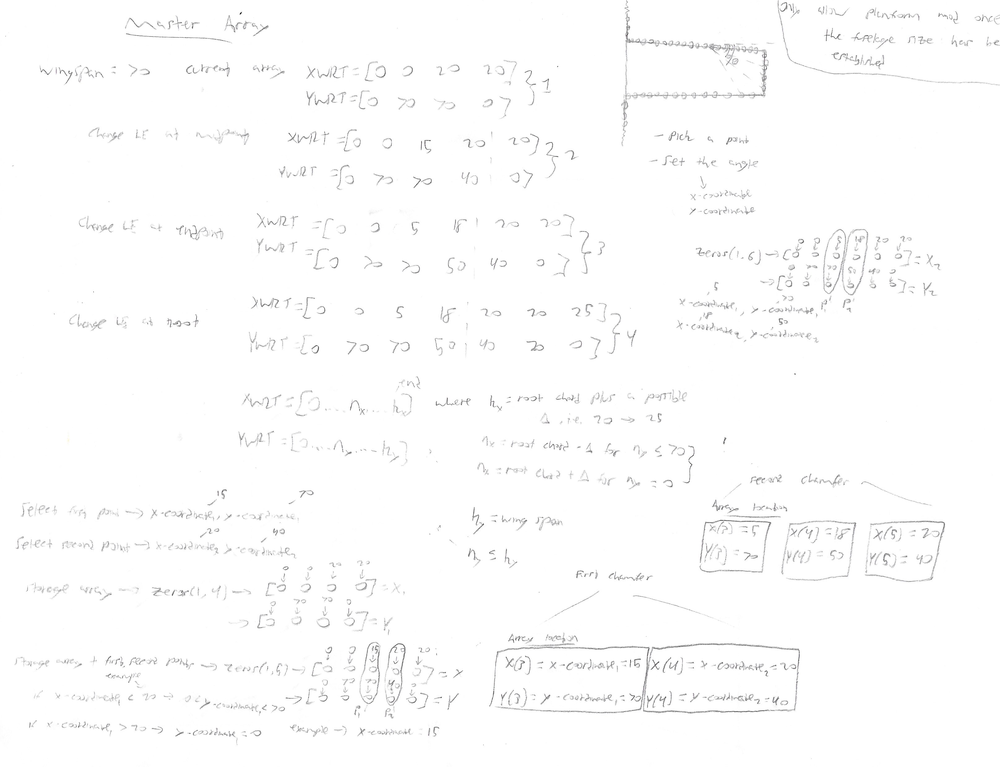
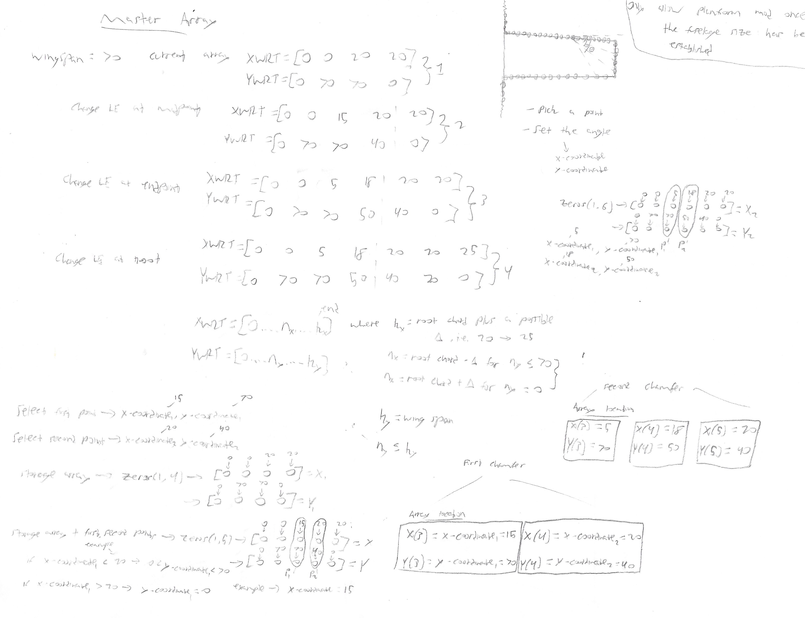
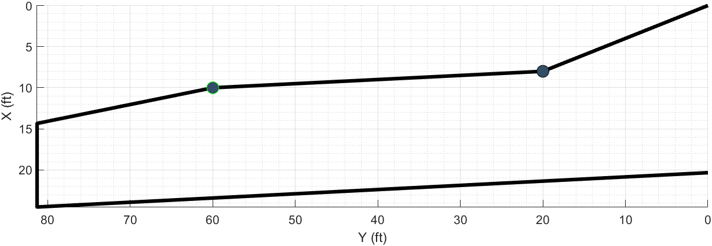
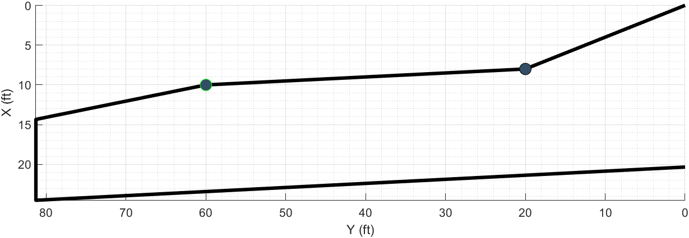

Wing Planform Modification Code
The second, the ability to create a multi segment wing was also fairly complex. The biggest problem I faced with writing the wing segment code was in reordering the points of each segment. The problem essentially revolves around matrix manipulation. Everytime a point is laid down for a new segment, it’s position along the wingspan needs to be stored so that the wing is remodeled with the correct number of segments.
Similar to how MATLAB plotted the wing with a FOR loop from the Airfoil code, four points are needed to complete a wing segment. Therefore, if a single point is placed along the leading edge of the wing, a similar point needs to be placed at the same location along the span on the trailing edge. This ensures MATLAB can build the wing with two complete segments.
Below is an example of an unmodified wing planform. At the end of this code, the wing will be separated into ten segments, five for each half wing span.
Unmodified Wing Planform
The sketches below are the basic theories behind the process described above. Each point that is placed along the wing is stored into an array to determine the order that the wing should be modeled.

 

Below is the code that follows the idea laid out from the sketches above. It reorders the points for each segment and determines the slope of each segment to determine the modeling of a complex multi-segment wing.
Wing Planform Code
Following code snippet assumes that points have been placed on both the leading and trailing edges, that way it won’t encounter problems with empty arrays. If points are only placed along the leading or trailing edge, not both, a code snippet below this is run.
% Wing Preview
%--------------------------------------------------------------------------
% The following code is quite involved, but it solves a fairly complex
% problem. Adding points to only the leading edge or the trailing edge is
% quite easy, all you need to do is ensure that they are in the correct
% order to build the final wing. Unfortunately, when you add points to both
% the leading and trailing edge it becomes much more complex.
% For example say you add two points to the leading edge, so now the wing
% is broken up into three sections. Then you add a point to the trailing
% edge that is in between those two leading edge points. Now to construct
% the wing correctly you need to calculate the slope created by those two
% leading edge points and then, the difficult part, essentially mirror the
% trailing edge point to the leading edge to create another wing segment
% between the current three segments.
% The problem only becomes more complex when you want to modify those
% points by moving them along the span. Then you have to reorder every
% point correctly, and create the wing segments in the correct order.
%--------------------------------------------------------------------------
% To begin we need to determine if we need to create an extra wing segment
% or not based on whether we have a point placed on either the root chord
% or tip chord
% If a point is placed on either the root or tip chord set addOn to 0
if isempty(yLocationInc) ~= 1 && yLocationInc == 0 || isempty(yLocationInc) ~= 1 && yLocationInc == (b/2)
addOn = 0;
else
addOn = 1;
end
% If one of the points on the leading edge is on the tip chord set addOn to
% 0
if isempty(storageArrayP1) ~= 1 && max(tempStorageArrayY1) == b/2
addOn = 0;
else
addOn = 1;
end
% Initialize subarrays of XWRTMainC and YWRTMainC which is the completed
% arrays for housing all of the leading and trailing edge points
% Find where the maximum and min points are along the leading edge and
% store them in XWRTMainC and YWRTMainC and set them to a Find.
[~,findMaxLEPoints] = find(YWRTMainC == max(YWRTMainC));
[~,findMinLEPoints] = find(YWRTMainC == min(YWRTMainC));
findMaxLEPoints = min(findMaxLEPoints);
findMinLEPoints = min(findMinLEPoints);
% Find where the maximum and min points are along the trailing edge and
% store them in XWRTMainC and YWRTMainC and set them to a Find.
[~,findMaxTEPoints] = find(YWRTMainC == max(YWRTMainC));
[~,findMinTEPoints] = find(YWRTMainC == min(YWRTMainC));
findMaxTEPoints = max(findMaxTEPoints);
findMinTEPoints = max(findMinTEPoints);
% Create subarrays for the X-Axis and Y-Axis along the leading edge of the
% main arrays
XWRTMainLE = XWRTMainC(findMinLEPoints:findMaxLEPoints);
YWRTMainLE = YWRTMainC(findMinLEPoints:findMaxLEPoints);
% Create subarrays for the X-Axis and Y-Axis along the trailing edge of the
% main arrays
XWRTMainTE = XWRTMainC(findMaxTEPoints:findMinTEPoints);
YWRTMainTE = YWRTMainC(findMaxTEPoints:findMinTEPoints);
% Leading Edge
% Determine the slope of each wing segment created by adding a point
if isempty(storageArrayP1) ~= 1 && addOn > 0
slopeLEArray = zeros(1,storageArrayP1(end)+addOn);
for num = 1:storageArrayP1(end)+addOn
slopeLEArray(num) = (XWRTMainLE(num+addOn) - XWRTMainLE(num))/(YWRTMainLE(num+addOn) - YWRTMainLE(num));
end
[~,findBehindPointLE] = find(tempStorageArrayYSort1 <= yLocationInc);
if isempty(findBehindPointLE) == 1
findBehindPointLE = 1;
end
else
slopeLEArray = (XWRTMainLE(2) - XWRTMainLE(1))/(YWRTMainLE(2) - YWRTMainLE(1));
findBehindPointLE = 1;
end
% Trailing Edge
% Determine the slope of each wing segment created by adding a point
if isempty(storageArrayP2) ~= 1 && addOn > 0
slopeTEArray = zeros(1,storageArrayP2(end)+addOn);
for num = 1:storageArrayP2(end)+addOn
slopeTEArray(num) = (XWRTMainTE(num+addOn) - XWRTMainTE(num))/(YWRTMainTE(num+addOn) - YWRTMainTE(num));
end
[~,findBehindPointTE] = find(tempStorageArrayYSort2 <= yLocationInc);
if isempty(findBehindPointTE) == 1
findBehindPointTE = 1;
end
else
slopeTEArray = (XWRTMainTE(end) - XWRTMainTE(end-1))/(YWRTMainTE(end) - YWRTMainTE(end-1));
findBehindPointTE = 1;
end
if isempty(storageArrayP1) == 1
storageArrayP1 = 0;
elseif isempty(storageArrayP2) == 1
storageArrayP2 = 0;
end
numWingSegments = storageArrayP1(end) + storageArrayP2(end) + addOn;
tpArray = zeros(1,numWingSegments);
% Now create a loop to gradually build up the wing for each wing
% segment. This is where it gets fun.
for i = 2:numWingSegments + addOn
if tempStorageArrayXSort1 == 0
tempStorageArrayXSort1 = [];
end
if tempStorageArrayYSort1 == 0
tempStorageArrayYSort1 = [];
end
if tempStorageArrayXSort2 == 0
tempStorageArrayXSort2 = [];
end
if tempStorageArrayYSort2 == 0
tempStorageArrayYSort2 = [];
end
% We need an array to partition all of the leading edge points
% as well as the ones created by the trailing edge modification
combinedLEArrayPointsX = [XWRTMainLE tempStorageArrayXSort2];
combinedLEArrayPointsY = [YWRTMainLE tempStorageArrayYSort2];
combinedTEArrayPointsX = [XWRTMainTE tempStorageArrayXSort1];
combinedTEArrayPointsY = [YWRTMainTE tempStorageArrayYSort1];
if isempty(tempStorageArrayXSort1) == 1
tempStorageArrayXSort1 = 0;
end
if isempty(tempStorageArrayYSort1) == 1
tempStorageArrayYSort1 = 0;
end
if isempty(tempStorageArrayXSort2) == 1
tempStorageArrayXSort2 = 0;
end
if isempty(tempStorageArrayYSort2) == 1
tempStorageArrayYSort2 = 0;
end
% Begin looping across all of the inputted trailing edge points
for jj = 1:length(tempStorageArrayXSort2)
% Find where the trailing edge points are stored in the
% combined array housing all of the leading and trailing
% edge points
if tempStorageArrayXSort1 ~= 0
findLEXPoints = find(combinedLEArrayPointsX == tempStorageArrayXSort2(jj));
else
findLEXPoints = [];
end
findLEXPoints = find(combinedLEArrayPointsX == tempStorageArrayXSort2(jj));
% Rearrange the Y Sort array in descending order
rearrangedYSort1 = sort(tempStorageArrayYSort1,'descend');
% Initialize two arrays for rearranging the X-coordinate points in
% the correct order
findYLocationArray = zeros(length(tempStorageArrayXSort1),1);
rearrangedXArray = zeros(length(tempStorageArrayXSort1),1);
% Arrange the X-coordinate points according to the order that they
% were inputted along with the rearranged Y-coordinate
% points
for n = 1:length(tempStorageArrayXSort1)
intermediateArray = find(tempStorageArrayYSort1 == tempStorageArrayYSort1(n));
if length(intermediateArray) > 1
findFirstValue = intermediateArray == n;
findSecondValue = findFirstValue == 0;
intermediateArray(findSecondValue) = [];
findYLocationArray(n) = intermediateArray;
else
findYLocationArray(n) = intermediateArray;
end
findYLocationArray(n) = find(findYLocationArray == n);
findYSorted = rearrangedYSort1 == tempStorageArrayYSort1(findYLocationArray(n));
rearrangedXArray(findYSorted) = tempStorageArrayXSort1(findYLocationArray(n));
end
rearrangedXSort1 = rearrangedXArray';
% Find where the trailing edge point is greater than the
% leading edge points. If it isn't then set the Find to 0
for inc1 = 1:length(tempStorageArrayYSort1)
if tempStorageArrayYSort2(jj) > rearrangedYSort1(inc1)
findSlopeLEPoint1 = inc1;
break
else
findSlopeLEPoint1 = 0;
end
end
% Find where the trailing edge point is less than the
% leading edge points. If it isn't then set the Find to 0
for inc2 = 1:length(tempStorageArrayYSort1)
if tempStorageArrayYSort2(jj) < tempStorageArrayYSort1(inc2)
findSlopeLEPoint2 = inc2;
break
else
findSlopeLEPoint2 = 0;
end
end
% If the first Find is greater than the second Find, set
% the maxPoint to the first Find and set the substitute
% arrays to the rearranged arrays. If it isn't then do the
% opposite and set the substitute arrays to the regular Sort
% arrays
if findSlopeLEPoint1 > findSlopeLEPoint2
maxPointLE = findSlopeLEPoint1;
substituteXArray = rearrangedXSort1;
substituteYArray = rearrangedYSort1;
elseif findSlopeLEPoint2 > findSlopeLEPoint1
maxPointLE = findSlopeLEPoint2;
substituteXArray = tempStorageArrayXSort1;
substituteYArray = tempStorageArrayYSort1;
else
maxPointLE = findSlopeLEPoint1;
substituteXArray = rearrangedXSort1;
substituteYArray = rearrangedYSort1;
end
if storageArrayP2(end) ~= 0 && storageArrayP1(end) == 0
maxPointLE = findSlopeLEPoint1;
substituteXArray = min(XWRTMainLE);
substituteYArray = min(YWRTMainLE);
end
% Determine what wing segments and subsequent slopes the
% trailing edge points are under
for count = storageArrayP1(end)+addOn:-1:1
if count > 1 && tempStorageArrayYSort2(jj) > tempStorageArrayYSort1(count-addOn)
slopeLEPoint = slopeLEArray(count);
break
elseif tempStorageArrayYSort2(jj) < tempStorageArrayYSort1(1)
slopeLEPoint = slopeLEArray(1);
break
else
slopeLEPoint = slopeLEArray;
end
end
% Here's the important part, for the trailing edge point found
% in the combined array determine its new X-Coordinate due to being
% translated(mirrored) to the leading edge
if isempty(findLEXPoints) ~= 1
combinedLEArrayPointsX(findLEXPoints) = (tempStorageArrayYSort2(jj)...
- substituteYArray(maxPointLE)) * slopeLEPoint + substituteXArray(maxPointLE);
end
end
% Set the combined array to a new sorter array name
pointLE = combinedLEArrayPointsX;
For brevity, I removed the trailing edge code as it is identical to the leading edge code.
.
.
.
% Arrange the Y-coordinate points in decreasing order
sortedLEPointsY = sort(combinedLEArrayPointsY);
% Initialize two arrays for rearranging the X-coordinate points in
% the correct order
findYLocationArray = zeros(length(pointLE),1);
rearrangedXArray = zeros(length(pointLE),1);
% Arrange the X-coordinate points according to the order that they
% were inputted
for m = 1:length(combinedLEArrayPointsX)
intermediateArray = find(combinedLEArrayPointsY == combinedLEArrayPointsY(m));
if length(intermediateArray) > 1
findFirstValue = intermediateArray == m;
findSecondValue = findFirstValue == 0;
intermediateArray(findSecondValue) = [];
findYLocationArray(m) = intermediateArray;
else
findYLocationArray(m) = intermediateArray;
end
findYLocationArray(m) = find(findYLocationArray == m);
findYSorted = sortedLEPointsY == combinedLEArrayPointsY(findYLocationArray(m));
rearrangedXArray(findYSorted) = combinedLEArrayPointsX(findYLocationArray(m));
end
sortedLEPointsX = rearrangedXArray;
% Initialize two arrays for rearranging the X-coordinate points in
% the correct order
findYLocationArray = zeros(length(pointTE),1);
rearrangedXArray = zeros(length(pointTE),1);
% Arrange the X-coordinate points according to the order that they
% were inputted
for m = 1:length(combinedTEArrayPointsX)
intermediateArray = find(combinedTEArrayPointsY == combinedTEArrayPointsY(m));
if length(intermediateArray) > 1
findFirstValue = intermediateArray == m;
findSecondValue = findFirstValue == 0;
intermediateArray(findSecondValue) = [];
findYLocationArray(m) = intermediateArray;
else
findYLocationArray(m) = intermediateArray;
end
findYLocationArray(m) = find(findYLocationArray == m);
findYSorted = sortedLEPointsY == combinedTEArrayPointsY(findYLocationArray(m));
rearrangedXArray(findYSorted) = combinedTEArrayPointsX(findYLocationArray(m));
end
sortedTEPointsX = rearrangedXArray;
tpArray(i) = (pointTE(i) - pointLE(i)) / rootChord;
tpSub = sort(tpArray(2:end),'descend');
tpArray = [0 tpSub];
end
% Determine taper of each segment
tpArray = (sortedTEPointsX' - sortedLEPointsX') / rootChord;
if storageArrayP1 == 0
storageArrayP1 = [];
elseif storageArrayP2 == 0
storageArrayP2 = [];
end
% Initialize array for final storage of leading edge points
sorted_airfoil_coords_xLE = zeros(comboAirfoilSize(1),length(pointLE));
% Create array of final leading edge points
airfoil_coords_xLE = comboAirfoil_coords_xRoot * rootChord * tpArray + sortedLEPointsX';
% Cut the above array in half to only look at the top surface first
sub_airfoil_coords_xLE = airfoil_coords_xLE(ceil(comboAirfoilSize(1)/2),:);
findLEPointsX = zeros(1,length(pointLE));
% Determine the final position of the leading edge points
for inc = 1:length(pointLE)
findLEPointsX(inc) = find(sub_airfoil_coords_xLE(inc) == sortedLEPointsX, 1 );
sorted_airfoil_coords_xLE(:,inc) = airfoil_coords_xLE(:,findLEPointsX(inc));
end
% Set airfoil_coords_xLE to sorted_airfoil_coords_xLE variable
airfoil_coords_xLE = sorted_airfoil_coords_xLE;
% Wing Area
wingArea = (b/2)*c*(1+tp);
% Wing Aspect Ratio
ARWing = b^2/wingArea;
% X-Coordinates
XW1=1;
XW2=XW1+(b/c)*tand(LamLE);
XW4=XW1+1;
% Z-Coordinates
ZW2=1/2+(XW4-XW2)*sind(i_w)+(ARWing)*tand(Gam);
xCoordsBoth = airfoil_coords_xLE;
yCoordsBoth = (ones(comboAirfoilSize(1),1).*sortedLEPointsY(1:i));
zCoordsMid = (comboAirfoil_coords_yRoot.*(ones(1,numWingSegments+addOn)+ZW2).*rootChord*tp);
zCoordsEnd = (comboAirfoil_coords_yTip.*rootChord*tp);
zCoordsBoth = [zCoordsMid(:,1:end-1), zCoordsEnd];
if storageArrayP1 == 0
storageArrayP1 = [];
end
if storageArrayP2 == 0
storageArrayP2 = [];
end
if tempStorageArrayXSort1 == 0
tempStorageArrayXSort1 = [];
end
if tempStorageArrayYSort1 == 0
tempStorageArrayYSort1 = [];
end
if tempStorageArrayXSort2 == 0
tempStorageArrayXSort2 = [];
end
if tempStorageArrayYSort2 == 0
tempStorageArrayYSort2 = [];
end
Following code snippet is for if a point is the first one placed on either the leading or trailing edge. The issue with the above code is that it assumes a nonempty array for both leading and trailing edge points. Therefore, only need to manipulate arrays for the leading edge points or for the trailing edge points, not both.
if isempty(storageArrayP1) == 1 && isempty(storageArrayP2) == 1
switch(lineSelected)
%% 1 Leading Edge Modification
case 1
if isempty(storageArrayP1) ~= 1
yLocationFirstWS = zeros(1,storageArrayP1(end));
xLocationFirstWSLES = zeros(1,storageArrayP1(end));
firstWSChord = zeros(1,storageArrayP1(end));
tpWS = zeros(1,storageArrayP1(end));
else
yLocationFirstWS = 0;
xLocationFirstWSLES = 0;
firstWSChord = 0;
tpWS = 0;
storageArrayP1 = 0;
end
airfoil_coords_xLE = zeros(comboAirfoilSize(1),storageArrayP1(end)+addOn);
if isempty(storageArrayP2) == 1
incrementSlope = 1;
else
incrementSlope = storageArrayP2;
end
for j = 1:incrementSlope(end)
for i = 1:storageArrayP1(end)+addOn
upperAirfoilCoordsXLE = zeros(comboAirfoilSize(1),storageArrayP1(end)+addOn);
lowerAirfoilCoordsXLE = zeros(comboAirfoilSize(1)+1,storageArrayP1(end)+addOn);
% Y-Location of end of first wing segment
yLocationFirstWS(i) = slopeTEArray(findBehindPointTE(j))*YWRTMainLE(i+1) + rootChord;
% X-Location accounting for LE sweep
xLocationFirstWSLES(i) = yLocationFirstWS(i);
% Subtract LE point
firstWSChord(i) = xLocationFirstWSLES(i) - XWRTMainLE(i+1);
% Taper of wing segment
tpWS(i) = firstWSChord(i)/rootChord;
% Set up airfoil coordinates for each wing segment
airfoil_coords_xLE(:,i) = (yLocationFirstWS(i) - comboAirfoil_coords_xRoot*rootChord*tpWS(i));
% Need to separate airfoil_coords_xLE into a upper and lower
% section and then invert them and put the whole array back
% together
[maxAirfoilCoordsXLE_Val,maxAirfoilCoordsXLE_Loc] = max(airfoil_coords_xLE(:,i));
upperAirfoilCoordsXLE(1:maxAirfoilCoordsXLE_Loc,i) = airfoil_coords_xLE(1:maxAirfoilCoordsXLE_Loc,i);
lowerAirfoilCoordsXLE(maxAirfoilCoordsXLE_Loc+2:end,i) = airfoil_coords_xLE(maxAirfoilCoordsXLE_Loc+1:end,i);
% Find zeros
findZerosUpper = upperAirfoilCoordsXLE == 0;
findZerosLower = lowerAirfoilCoordsXLE == 0;
% Erase zeros
upperAirfoilCoordsXLE(findZerosUpper) = [];
lowerAirfoilCoordsXLE(findZerosLower) = [];
% Add in max point so that the upper and lower are same
lowerAirfoilCoordsXLE = [maxAirfoilCoordsXLE_Val lowerAirfoilCoordsXLE];
% Erase last point on lowerAirfoilCoordsXLE otherwise
% we would have two, only need one
lowerAirfoilCoordsXLE(end) = [];
airfoil_coords_xLE(:,i) = [lowerAirfoilCoordsXLE upperAirfoilCoordsXLE];
end
end
% For tip chord need to do something a little different
tipChordPointsY = find(YWRTMainC == b/2);
tipChordPointsX = XWRTMainC(tipChordPointsY);
% Taper of tip chord
tpTC = (tipChordPointsX(2)-tipChordPointsX(1)) / rootChord;
% Airfoil coordinates of tip chord
airfoil_coords_xEnd = comboAirfoil_coords_xRoot*rootChord*tpTC+tipChordPointsX(1);
% Set up airfoil coordinates for first point
airfoil_coords_x1 = comboAirfoil_coords_xRoot*rootChord + XWRTMainLE(1);
if addOn == 0
xCoordsLE = [airfoil_coords_x1, airfoil_coords_xEnd];
else
xCoordsLE = [airfoil_coords_x1, airfoil_coords_xLE];
end
% Build final arrays along each axis to input into surface plot
yCoordsLE = (ones(comboAirfoilSize(1),1).*YWRTMainLE(1:i+1));
zCoordsLERoot = comboAirfoil_coords_yRoot.*rootChord;
zCoordsLE = comboAirfoil_coords_yTip.*(ones(1,storageArrayP1(end)+addOn+1).*tipChord);
zCoordsLE(:,1) = zCoordsLERoot;
%% Trailing Edge Modification
case 2
xLocationFirstWS = zeros(1,storageArrayP2(end));
xLocationFirstWSLES = zeros(1,storageArrayP2(end));
firstWSChord = zeros(1,storageArrayP2(end));
tpWS = zeros(1,storageArrayP2(end));
airfoil_coords_xTE = zeros(comboAirfoilSize(1),storageArrayP2(end)+addOn);
if isempty(storageArrayP1) == 1
incrementSlope = 1;
else
incrementSlope = storageArrayP1;
end
for j = 1:incrementSlope(end)
for i = 1:storageArrayP2(end)+addOn
% X-Location of LE of wing segment
xLocationFirstWS(i) = slopeLEArray(findBehindPointLE(j))*YWRTMainTE(i+1);
% X-Location accounting for TE sweep
xLocationFirstWSLES(i) = xLocationFirstWS(i);
% Subtract LE point
firstWSChord(i) = xLocationFirstWSLES(i);
firstWSChord(i) = XWRTMainTE(i+1) - xLocationFirstWSLES(i);
% Taper of wing segment
tpWS(i) = firstWSChord(i)/rootChord;
if tpWS(i) == 0
tpWS(i) = 1;
end
% Set up airfoil coordinates for each wing segment
airfoil_coords_xTE(:,i) = xLocationFirstWS(i) + comboAirfoil_coords_xRoot*rootChord*tpWS(i);
end
end
% For tip chord need to do something a little different
tipChordPointsY = find(YWRTMainC == b/2);
tipChordPointsX = XWRTMainC(tipChordPointsY);
% Taper of tip chord
tpTC = (tipChordPointsX(2)-tipChordPointsX(1)) / rootChord;
% Airfoil coordinates of tip chord
airfoil_coords_x1 = comboAirfoil_coords_xRoot*rootChord*tpTC+tipChordPointsX(1);
% Set up airfoil coordinates for first point
xLocationFirstWS(3) = slopeLEArray(findBehindPointLE)*YWRTMainTE(1);
% Build final arrays along each axis to input into surface plot
xCoordsTE = [airfoil_coords_x1, airfoil_coords_xTE];
yCoordsTE = (ones(comboAirfoilSize(1),1).*YWRTMainTE);
zCoordsTERoot = comboAirfoil_coords_yRoot.*rootChord.*tp;
zCoordsTE = comboAirfoil_coords_yTip.*(ones(1,storageArrayP2(end)+addOn+1).*rootChord*tp);
zCoordsTE(:,1) = zCoordsTERoot;
end
end
xCoords = xCoordsBoth;
yCoords = yCoordsBoth;
zCoords = zCoordsBoth;
%% ------------------------------------------------------------------------
Plot the final multi segment wing. If it’s the first time creating the wing, no points are stored, so only need to create the wing with a single segment.
if isempty(storageArrayP1) ~= 1 || isempty(storageArrayP2) ~= 1
delete(wingPreviewLeft);
delete(wingPreviewRight);
delete(wingPreviewLeftInitial);
delete(wingPreviewRightInitial);
delete(rightAirfoil);
delete(leftAirfoil);
% Plot left wing
wingPreviewLeft = surface(previewAxes,xCoords,yCoords,zCoords);
wingPreviewLeft.EdgeColor = 'none';
% Plot right wing
wingPreviewRight = surface(previewAxes,xCoords,-yCoords,zCoords);
wingPreviewRight.EdgeColor = 'none';
else
% X-Coordinates
XW1 = 0;
XW2=XW1 + (b/2)*tand(LamLE);
XW4=XW1+rootChord;
% Z-Coordinates
ZW1=rootChord*sind(i_w);
ZW2=(XW4-XW2)*sind(i_w)+(b/2)*tand(Gam);
XWRRoot = ((comboAirfoil_coords_xRoot).*rootChord)+XW1;
XWRTip = ((comboAirfoil_coords_xTip.*tipChord)+XW2);
XWRLRoot = ((comboAirfoil_coords_xRoot).*rootChord)+XW1;
XWRLTip = ((comboAirfoil_coords_xTip.*tipChord)+XW2);
YWRT3 = zeros(length(XWRRoot),2);
ZWRLRoot = ((comboAirfoil_coords_yRoot).*rootChord)+ZW1;
ZWRLTip = ((comboAirfoil_coords_yTip).*tipChord)+ZW2;
YWRT3(:,1) = 0;
YWRT3(:,2) = -b/2+((b/2)-(b/2)*cosd(Gam));
XWRT3 = [XWRLRoot,XWRLTip];
ZWRT3 = [ZWRLRoot,ZWRLTip];
% Plot Left Wing
wingPreviewLeft = surface(previewAxes,XWRT3,YWRT3,ZWRT3);
wingPreviewLeft.EdgeColor = 'none';
YWRT = zeros(length(XWRRoot),2);
ZWRRoot = ((comboAirfoil_coords_yRoot).*rootChord)+ZW1;
ZWRTip = ((comboAirfoil_coords_yTip).*tipChord)+ZW2;
YWRT(:,1) = 0;
YWRT(:,2) = b/2-((b/2)-(b/2)*cosd(Gam));
XWRT = [XWRRoot,XWRTip];
ZWRT = [ZWRRoot,ZWRTip];
% Plot Right Wing
wingPreviewRight = surface(previewAxes,XWRT,YWRT,ZWRT);
wingPreviewRight.EdgeColor = 'none';
end
hold on
% X-Coordinates
XW1 = 0;
XW2=XW1 + (b/2)*tand(LamLE);
XW4=XW1+rootChord;
XWR2 = ((comboAirfoil_coords_xRoot.*tipChord)+XW2);
% Y-Coordinates
YWR2 = (zeros(comboAirfoilSize) + b/2);
% Z-Coordinates
ZW2=(XW4-XW2)*sind(i_w)+(b/2)*tand(Gam);
ZWR2 = ((comboAirfoil_coords_yTip+ZW2).*tipChord);
% The ends of the airfoil are plotted at the end, because the surface can't render a Fill
rightAirfoil = fill3(previewAxes,XWR2,YWR2,ZWR2,[.5 .5 .5]);
leftAirfoil = fill3(previewAxes,XWR2,-YWR2,ZWR2,[.5 .5 .5]);
Below is an example of this concept. Note the wing is modified from Left to Right. Also similar to the Airfoil code, when placing points on both the leading and trailing edges, the slope of these points is needed to ensure the wing is modeled properly.
Modified Wing Planform Outline
 



Modified Wing Planform
Obviously, the wing above is only used to demonstrate the planform modification code. Any aerodynamic, stability or structural changes are not currently taken into account. However, this code is necessary to allow for tracing the outline of an existing aircraft design into PAC and reverse engineering it’s capabilities(future feature). For the simple empirical methods that PAC uses, an adjustment of the overall wing surface area by summing the surface areas of each wing segment together could be used for a very rough empirical estimate of the effects of such a wing.